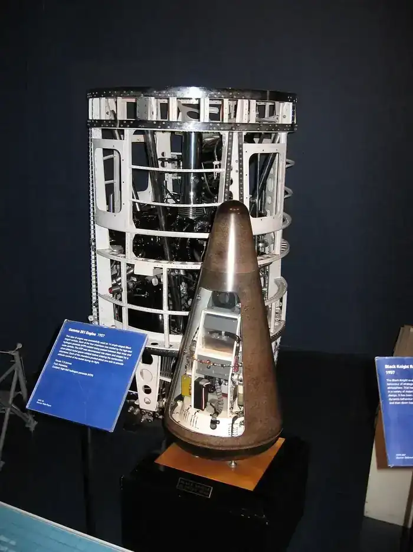

The 1998 photograph
During the STS-88 mission — the first space shuttle flight to assemble the International Space Station, in December 1998 — astronauts on a spacewalk lost a thermal blanket. It drifted away from the shuttle, and crew members photographed it through a window.
Maps, diagrams and images


In the photographs, a dark, crumpled, jagged shape floats against the black of space, with Earth below. It looks like a machine. It looks, if you want it to, like a craft.
NASA's identification is mundane and consistent: it is the lost blanket, a piece of multi-layer insulation. The images are public and the mission logs are public.
Where the story came from
The legend predates the photograph by decades, and the two got welded together later.
- 1960: the American astronomer Lincoln LaPaz and others reported a dark object in a near-Earth orbit, and Time ran a short item about an unexplained “dark object” being tracked. The object was later resolved as debris from a launched satellite.
- The name: “Black Knight” was also a British rocket of the 1950s–60s, tested at Woomera. The shared name has caused a remarkable amount of confusion.
- 1960s radio echoes: reports of long-delayed radio echoes (LDEs) — signals returning seconds after transmission — were real and are still not fully explained. They were folded into the satellite story as “signals from the Black Knight”.
- The 13,000-year figure: this appears in later UFO literature with no source. No tracking data, from any agency, has ever shown an object in a stable polar orbit of that age.
Polar orbits decay. Even at 1,000 km, atmospheric drag and solar radiation pressure act over millennia. An object in low orbit does not stay there for 13,000 years without station-keeping — and a 13,000-year-old craft would need a power source, which would be detectable.
It would be catalogued. The US Space Surveillance Network tracks objects down to about 10 cm in low orbit. There is no unaccounted object matching the description, and amateur satellite observers — a large, obsessive community — have never found one.
The photo is dated and explained. The STS-88 blanket is documented in the mission record. The story requires NASA to be simultaneously transparent about the image and lying about the object in it.
The claim is unfalsifiable in practice. “They hid it” absorbs every absence of evidence, which is the same structure as Tartaria and phantom time.
What is genuinely unexplained
Long-delayed echoes are the interesting fragment. Beginning with Jørgen Hals in 1927 and studied by engineers through the 1960s, LDEs are radio signals that come back after delays of seconds to minutes. Explanations have been proposed — plasma effects in the magnetosphere, instrument artefacts, ducting — and none is fully satisfying. It is a small, real anomaly, documented in the technical literature, and it has nothing to do with a satellite.
That is the pattern worth noticing: the legend borrows its credibility from an actual unsolved phenomenon and attaches it to a claim that is not unsolved at all.
Sources for this page
- Wikipedia, “Black Knight satellite conspiracy theory” — the claims and the identificationsen.wikipedia.org
- NASA, STS-88 mission imagery and logsnasa.gov
- Wikipedia, “Long delayed echo” — the real radio anomalyen.wikipedia.org
- ESA, Space Environment Report — orbital debris and decayesa.int
Open resources on this topic
- BookKing Arthur and the black knight — Meister, Cari · 2009 (Internet Archive, free to read)
- BookThe Black Knight: (Der Schwarze Ritter); Cantata for Chorus and Orchestra — Edward Elgar, Ludwig Uhland, Henry Wadsworth Longfellow · 1893 (Internet Archive, free to read)
- BookAnna Mister God and the black knight — Fynn · 1991 (Internet Archive, free to read)
- PapersOpen-access articles: DOAJ · PubMed Central · Internet Archive Scholar
- BooksPublic-domain and borrowable copies: Open Library · Project Gutenberg · Google Books
Cite this page
Momin, S. (2026). The Black Knight. The Larger World Archive. https://drsamonline.github.io/LARGE_GLOBE/black-knight.htmlMomin, Sohil. “The Black Knight.” The Larger World Archive, 2026, https://drsamonline.github.io/LARGE_GLOBE/black-knight.html.Momin, Sohil. “The Black Knight.” The Larger World Archive, 2026. https://drsamonline.github.io/LARGE_GLOBE/black-knight.html.@misc{the2026black,
author = {Momin, Sohil},
title = {The Black Knight},
year = {2026},
howpublished = {The Larger World Archive},
url = {https://drsamonline.github.io/LARGE_GLOBE/black-knight.html},
note = {Last reviewed 20 November 2026}
}Last reviewed 20 November 2026 · Corrections policy · this page is not peer reviewed